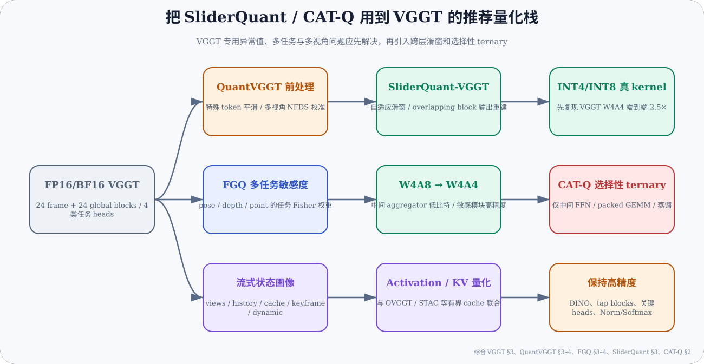
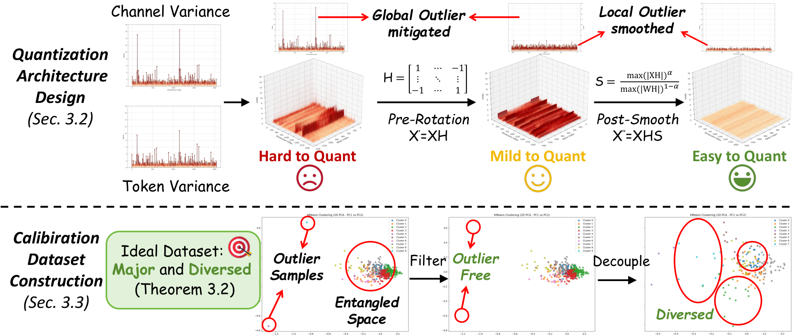
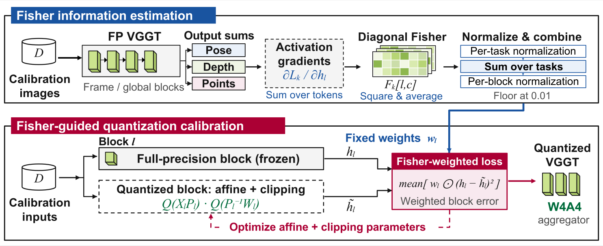
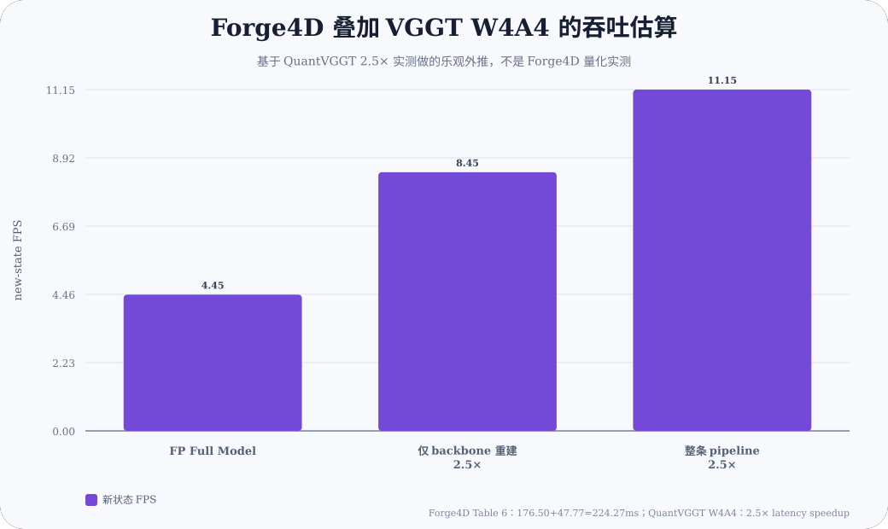

核心结论
方法脉络
关键证据
总体判断
对 VGGT 类模型，SliderQuant 应作为 VGGT 专用 W4 PTQ 的增强层；CAT-Q 应作为 W4 成功之后的选择性极限压缩，而不是替代 QuantVGGT/FGQ。
最合理的组合不是“直接跑 SliderQuant”或“整模型跑 CAT-Q”，而是：QuantVGGT 处理 camera/register token 造成的重尾 activation 与多视角校准不稳定；FGQ 测量 pose、depth、point 等任务对 block/channel 的不同敏感度；SliderQuant 再用 overlapping windows 抑制跨 block 误差传播。
推荐精度路线是 W8A8 sanity check → W4A8 → W4A4。只有在 W4A4 的 camera、depth、point、tracking 均稳定且已有真实 kernel 加速之后，才对中间 FFN 做 CAT-Q W1.58A16。
这一排序比 LLM 场景更重要：VGGT 的输出是连续相机、深度和稠密点图，局部几何误差会传播到全局坐标；模型还包含 activation×activation 的 QK/AV attention，weight-only ternary 无法覆盖这一大块计算。

VGGT 为什么既适合量化，又比 LLM 难
官方 VGGT-1B 使用 DINOv2 tokenizer，之后包含 24 个 frame-attention blocks 和 24 个 global-attention blocks；每帧增加 1 个 camera token 与 4 个 register tokens。Aggregator 的中间输出在 layer indices 4、11、17、23 被缓存并送往 camera/DPT/track heads，因此这些 tap blocks 不是普通中间层。
量化友好部分是大量 QKV/O projections 与 MLP linear layers，它们与 DiT/LLM 类似，适合 W4/W8 GEMM。量化困难部分有三类：第一，camera/register tokens 是 data-independent special tokens，会放大 activation outliers；第二，不同 view count 和场景几何导致校准分布变化；第三，camera、depth、point、track 共用 backbone，却具有完全不同的 block/channel 敏感度。
Global Attention 的 QKᵀ、Softmax 和 AV 是 activation×activation 操作，不会因为权重被压成 W4/W1.58 就自动加速。输入帧数增大后，这些二次复杂度算子和 activation memory 占比上升，weight-only CAT-Q 的收益会进一步被稀释。
官方实现还在 torch.cuda.amp.autocast(enabled=False) 下运行 camera、depth 和 point heads，说明原始设计刻意让关键几何 heads 保持高精度。首轮量化应聚焦 aggregator，不应同时压低 heads。

直接 VGGT 量化工作已经告诉了我们什么
SliderQuant/CAT-Q 的迁移应建立在 VGGT 专用量化发现之上，而不是重复解决已知问题。
QuantVGGT 发现 special tokens 造成重尾、channel/token variance，并提出 pre-global Hadamard rotation + post-local channel smoothing；其 NFDS 从 400 个候选中筛选 40 个 frame-aware、多样且非异常的 calibration samples。W4A4 在 RTX 4090 上达到约 3.65× memory reduction、2.50× latency speedup，额外 smoothing 开销只有约 0.2%。
FGQ 进一步证明任务敏感度不同：naive W4A4 下 camera pose 相对稳健，point map 却可能出现 200%–500% normalized performance degradation。FGQ 用 pose/depth/point loss 的 diagonal Fisher 构造 block×channel weights，再指导 affine/clipping calibration；Fisher 预测与实测 quantization loss 的相关系数达到 r=0.88。
FGQ 在 A100 上的 real W4A4 block speedup 为 1.81×，低于 RTN 的 2.01×，因为 affine transform 带来开销；这再次说明质量保护和速度必须同时用真实 kernel 测。VersaQ-3D 则表明边缘设备上 weight loading 可能主导，而服务器/长序列上 global attention 重新成为瓶颈。


SliderQuant-VGGT 应该怎样改
SliderQuant 的 inter-layer/intra-layer 思路可直接保留，但敏感度依据必须更换。LLM 的 first/last-layer U 型规律应替换为 task Fisher × head tap × frame/global type × view count。被 heads 读取的 4、11、17、23 层，以及特殊 token 影响显著的早期 global blocks，应作为 anchor 或扩大 sliding window。
建议把一个 Alternating-Attention stage 视为 (frame_l, global_l) 的联合单元，而不是把 48 个 blocks 简单排成一条线。窗口输出 loss 使用 FGQ 的 channel weights，并同时监督 camera pose、scale-invariant depth、point map/normal/confidence；tracking 开启时再加入 feature/track consistency。
SliderQuant 的 learnable channel scaling 与 rank-4 LoRA 修正可以吸收到权重，不增加默认推理算子；但它不取代 QuantVGGT 的 special-token smoothing。更合理的是将 DSFQ/FlatQuant 变换作为量化参数化，再由 overlapping windows 联合优化。
校准数据不应只用随机图片。Offline VGGT 至少覆盖 1/2/4/8 views、不同 overlap、尺度、室内外和动态干扰；QuantVGGT 的 NFDS 负责筛掉异常并保持 frame diversity。

CAT-Q 在 VGGT 中的合理边界
CAT-Q 的 LM + Softened Ternarization 对任意大线性权重在数学上可用，但 VGGT 的精度风险高于 LLM：point map 和 depth 是稠密连续输出，误差作用于每个空间位置；camera/scale 错误还会全局传播。直接 W1.58 整个 aggregator 不具备证据。
首轮仅建议 ternary 不接 cached taps 的中间 FFN 大矩阵，使用 W1.58A16。Frame/global QKV/O 先保持 W4/W8，因为 QK/AV、RoPE、special tokens 与跨视角几何更敏感；DINO、camera/register tokens、tap blocks、camera/depth/point/track heads、Norm/Softmax 保持 FP16/BF16。
部署还需要新的 batched packed ternary GEMM。CAT-Q 的 TQ2_0 llama.cpp kernel 面向 batch-1 autoregressive decode，不能直接复用于 VGGT 的大 token 矩阵。没有 kernel 时，ternary checkpoint 可能更小却不会更快。
如果选择性 ternary 仍造成 dense geometry 下降，应转为短程 distillation/QAT：以 W4A4 QuantVGGT/FGQ 为 teacher，分别蒸馏 aggregator features、camera/depth/point heads，而不是继续增加 CAT-Q calibration epochs。

不同 VGGT 类工作的适用性
| 模型 | 主要瓶颈 | SliderQuant | CAT-Q | 推荐 |
|---|---|---|---|---|
| VGGT offline | 48 blocks + global attention + DPT heads | 高 | 中低，仅中间 FFN | QuantVGGT/FGQ W4 → Slider windows |
| FastVGGT/LiteVGGT | token redundancy + linear compute | 高，与 token merging 正交 | 中 | 先 token merge，再 W4 quant |
| StreamVGGT | 随历史增长的 causal attention/KV | 中 | 低 | 先 cache-bounding，再 weight+KV quant |
| OVGGT/XStream/STAC | 有界 cache 下的 backbone compute | 高 | 中低 | cache compression + W4A8/W4A4 |
| LongStream | 固定窗口、relative pose、scale head | 高 | 中低 | 中间 blocks W4；pose/scale/keyframe 高精度 |
| DVGT | 多视角×时间 factorized attention、metric ego pose | 高 | 中，仅 FFN | 按 intra/cross-view/cross-frame 分组滑窗 |
| Forge4D | VGGT 重建 + state/motion/Gaussian heads | 高，仅 backbone | 低 | backbone W4；motion/scale/GS fusion 高精度 |
流式模型必须额外处理 Activation / KV
SliderQuant 和 CAT-Q 的核心贡献都围绕 weights/activations 的 block reconstruction，但 StreamVGGT 的主要长期成本是每帧增加的 KV cache 和对历史 token 的 attention。只把 weights 压到 W4/W1.58，不会改变 cache 的 O(T) 增长，也不会显著减少 QK/AV。
因此 StreamVGGT 应先接 OVGGT、XStreamVGGT、STAC、RetrieveVGGT 等有界记忆策略，再量化当前-frame activations 与 retained KV。校准必须覆盖 history length 1/5/10/20/40、不同 cache budget、回环与动态场景。
LongStream 已经使用固定窗口和周期 refresh，更适合叠加 W4。它的 keyframe-relative pose、scale token/head 和 refresh 边界应保留高精度；否则量化误差会在跨 keyframe 链接处表现为轨迹/尺度漂移。
Forge4D 可获得多少潜在收益
Forge4D Table 6 中，VGGT-style keyframe reconstruction 为 176.50 ms，motion prediction 为 47.77 ms，总计 224.27 ms，即 4.45 FPS。若只把 reconstruction 部分乐观地按 QuantVGGT 的 2.5× 加速，估算为 176.50/2.5+47.77=118.37 ms，约 8.45 FPS。
若整条 pipeline 都能达到 2.5×，理论上约 11.15 FPS；但 motion head、Gaussian head/fusion、rendering 与 state attention 没有 QuantVGGT 实测，因此这只是上界。实际应先量化 Stage-1/2 VGGT backbone，并保持 scale、camera、motion、Gaussian 属性与 fusion heads 高精度。

建议实验矩阵
- Offline calibration：使用 QuantVGGT NFDS，从多数据集候选中筛选 40–64 clips，覆盖 1/2/4/8 views、不同 overlap、尺度和场景类型。
- 任务 loss：camera rotation/translation、scale-invariant depth、point/normal/confidence、track feature/visibility；用 FGQ Fisher 归一化后进入 Slider window objective。
- 流式 calibration：增加 history length、cache budget、keyframe refresh、loop/revisit、动态物体；单独评估 trajectory drift 与 scale drift。
- 部署指标：权重大小、activation/KV memory、parameter loading、frame/global blocks、QK/AV、heads、端到端 p50/p95；只报告理论 FLOPs 不算通过。
| 阶段 | 配置 | 关键验证 | 继续条件 |
|---|---|---|---|
| A0 | FP16/BF16 | 分离 DINO、frame/global attention、QK/AV、DPT/heads 时延 | 建立 task-wise 和 view-length 基线 |
| A1 | QuantVGGT W8A8 | 校准与真实 INT8 backend | pose/depth/point/track 均接近 FP |
| A2 | QuantVGGT W4A8 | 特殊 token smoothing + NFDS | dense geometry 不崩 |
| A3 | FGQ W4A4 | 任务 Fisher 是否保护 point/depth | 复现直接 VGGT W4 基线 |
| A4 | Slider-FGQ W4A4 | overlapping windows 是否进一步减少跨 block 误差 | 同 kernel 下质量优于 A3 |
| B1 | CAT-Q selective W1.58A16 | 仅中间、非 tap FFN | 有 packed GEMM 且 task-wise 误差可接受 |
| B2 | Selective ternary + distillation | teacher 为 A4，蒸馏 features 与 heads | 端到端速度实际优于纯 W4 |
局限与开放问题
- SliderQuant 与 CAT-Q 原论文没有在 VGGT 或其他 feed-forward 3D reconstruction models 上实验；本报告的组合方法需要重新实现和验证。
- QuantVGGT 的 2.5× 来自 RTX 4090/CUTLASS W4A4，FGQ 的 1.81× 来自 A100/Triton block benchmark；不能直接互相横向排名。
- VersaQ-3D 的主要高倍 speedup来自专用 accelerator 和 edge memory bottleneck，不代表普通服务器 GPU 会有同等收益。
- CAT-Q 的 llama.cpp packed ternary kernel 不适用于 VGGT batched multi-token GEMM；开发新 kernel 是实际前置条件。
- Forge4D 的 8.45/11.15 FPS 为乐观 Amdahl 外推，不是论文或代码实测。
证据与推断边界
- 论文明示：VGGT 架构、QuantVGGT 的特殊-token/多视角问题与 2.5× 实测、FGQ 的多任务 Fisher 与 1.81× block speedup。
- 论文明示：SliderQuant 的 adaptive sliding windows、CAT-Q 的 LM/ST 与 ternary deployment。
- 本文推断：QuantVGGT + FGQ + SliderQuant 的组合、各 VGGT 变体优先级以及高精度保留模块，是基于现有结果提出的工程路线。
- 任何 VGGT ternary 加速结论都必须以新开发 packed GEMM 和端到端多任务评测为准。
来源与版本
核查时间：2026-11-18（Asia/Shanghai）。主论文、直接 VGGT 量化文献、官方代码与此前 VGGT/Forge4D 调研分别核对；组合方案尚未实测。
- VGGT paper
- VGGT code — 核查 commit a288dd0f
- SliderQuant
- CAT-Q
- QuantVGGT — VGGT 专用 W4A4 PTQ
- FGQ — task-aware Fisher quantization
- VersaQ-3D — quantization + accelerator co-design
- StreamVGGT
- LongStream
- Forge4D